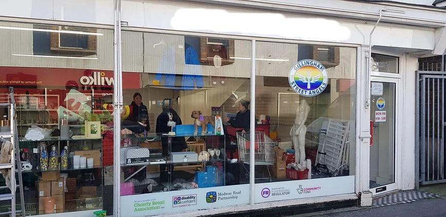

About Us
Youth's Truth is a youth charity that is focused on helping trans youth deal with their problems regarding assisting them to be who they truly are and helping to find foster homes for youths who have been discarded by their own families because of who they are or struggle to find a place where they belong. This charity is owned by a 28 year old trans woman who has experienced the exact troubles that her charity aims to help with, she started this charity as a way to help the next generation and make sure they don’t have to go through what she had to when she was younger. We aim to not only find volunteer foster parents for young people who have been discarded by their own families to look after them and see them as who they really are but also to help provide the young people with the recourses they need in order to become their true selves such as clothes, accessories, hormones, therapy etc. We aim to help not only one specific branch of trans youth but all of them, transfems, transmascs and non-binary people to become their true selves. In order to raise money for this we will set up a multitude of events, such as fun runs, auctions, volunteer music festivals etc, as well as take donations for people to contribute money towards funding all the aims of the charity and cover the expenses required to give the help that we would like to.
